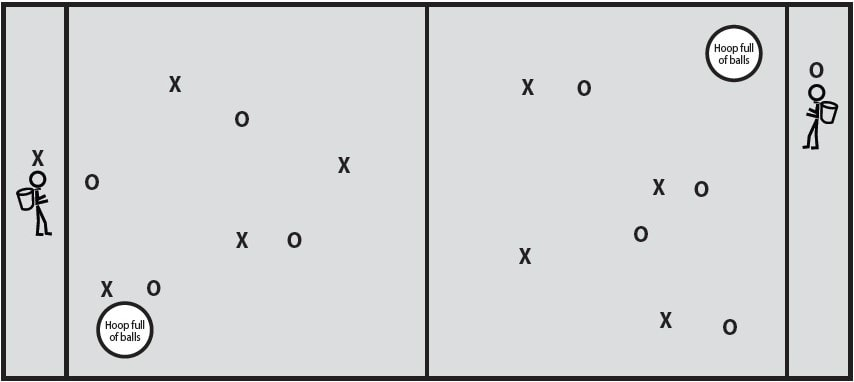

Objetivo y Características
El Cestomóvil es un juego muy cooperativo, con gran dinamismo que obliga a sus participantes a jugar de forma intensa en un campo de Balonmano o mas pequeño.
Es un juego predeportivo adaptado, idóneo para el alumnado del segundo ciclo de primaria que gusta al alumnado de Enseñanza Secundaria.
TERRENO DE JUEGO
Se juega en un campo de Balonmano o mas pequeño. El terreno de juego está dividido en dos partes iguales. Dentro de cada parte se marca un círculo de 5 metros de diámetro situando el borde a 5 metros de la línea del fondo. (la longitud del diámetro es igual a la cuarta parte de la longitud de cada campo y se sitúa a la misma distancia de la línea de fondo)
MATERIAL
Se juega con una pelota del tamaño de Balonmano, aproximadamente de 56 centímetros de longitud de la circunferencia.
La pelota idónea es del tipo de autohinchable o similar, es decir que no haga daño en su recepción.
Número de participantes
Cada equipo está formado por tres chicas y tres chicos en el terreno de juego.
Desarrollo del juego y principales reglas
- De cada equipo un chico o chica se colocará dentro del círculo que está situado en el campo contrario. Con sus manos sujetará una papelera de plástico con la que tratará de recepcionar la pelota autohinchable del tamaño del balonmano.
- Se consigue gol o un punto cuando el balón es recepcionado con la papelera que tiene un compañero o compañera que está situad@ dentro de un círculo.
- El comienzo del juego se realiza con un saque desde el centro del campo, al principio de cada tiempo y después de haber recibido canasta.
Reglas
- 1.-Se puede tocar la pelota con cualquier parte del cuerpo.
- 2.-NO se puede jugar de forma individual con autopases o regateando.
- 3.-Dentro del círculo sólo puede situarse un jugador o jugadora con una papelera. Es el único participante que puede estar dentro del círculo.
- No se puede correr con el balón. En caso de recibir un pase en carrera, se permite hacer un pase inmediato o dar los mínimos pasos necesarios hasta parar (3 Pasos)
- NO se puede retener el balón más de 5 segundos sin jugarlo. En ese tiempo se puede pivotar con un pie y no se le puede arrebatar el balón al jugador/a que lo tiene.
- Es falta defender dos jugadores a la vez sobre un atacante. Ante un balón en el aire que cogen simultáneamente un atacante y un defensor, tiene preferencia el atacante.
- Ningún participante puede defender a menos de un brazo de distancia del atacante, por lo tanto no se puede tocar, empujar u obstruir al contrario/a.
- No se permiten tres pases seguidos entre jugadores del mismo sexo.
- Las faltas se sacan desde el lugar que se ha cometido.
- Después del saque de falta no se puede puntuar directamente, sólo en el penalty.